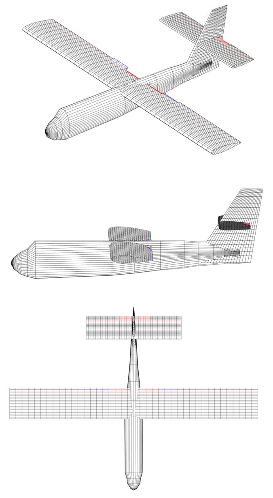
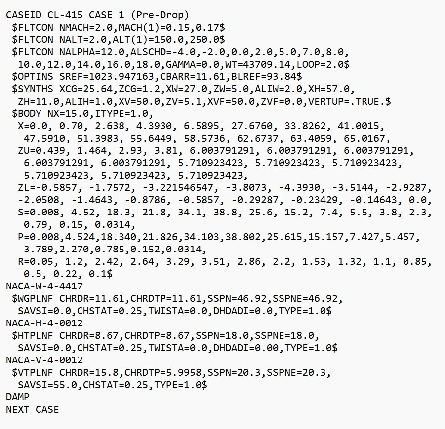
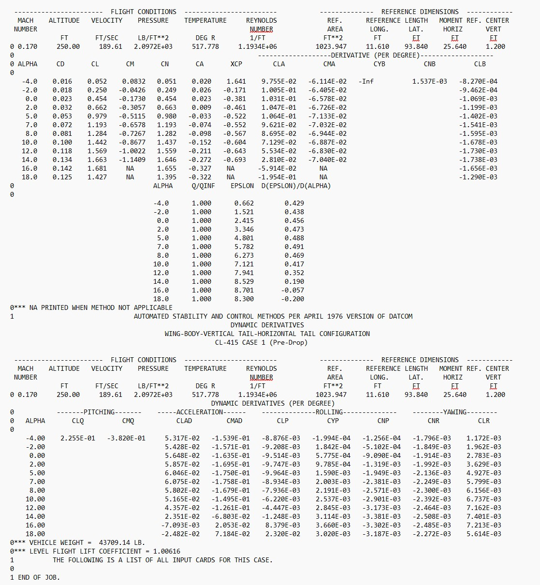
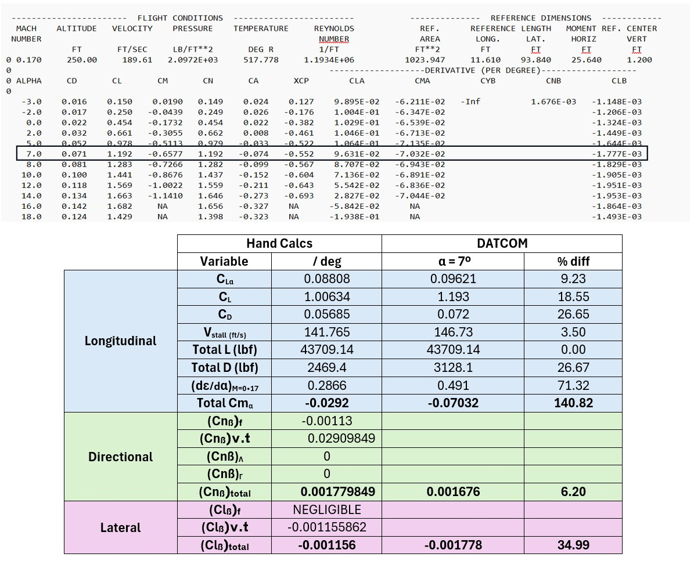
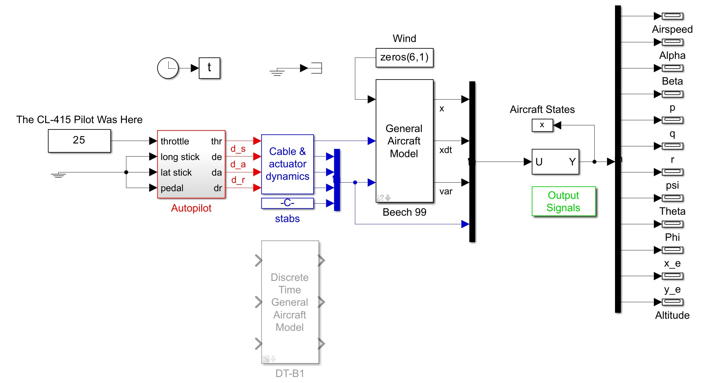

Engineering Process
The project followed a structured engineering workflow, progressing from the initial aircraft design through analytical calculations, computational validation, and finally full flight simulation. Each phase built upon the previous one to develop, verify, and validate the aircraft model.
Aircraft Geometry

The project began by defining the aircraft geometry, including the wing, fuselage, horizontal tail, and vertical tail dimensions. These geometric properties served as the foundation for every aerodynamic calculation, stability analysis, and simulation performed throughout the project.
Analytical Hand Calculations
Longitudinal, lateral, and directional stability derivatives were calculated using classical aircraft stability and control theory presented throughout the course. These calculations established the theoretical aerodynamic behavior of the aircraft before any computational tools were introduced.
The complete analytical work was organized into three project deliverables. Each report documents the engineering methodology, calculations, assumptions, and validation completed during that phase.
Excel Verification
Every analytical calculation was independently reproduced in Microsoft Excel to verify numerical accuracy, automate repetitive calculations, and compare analytical predictions with USAF Digital DATCOM results. The workbook contains separate worksheets for geometry calculations, aerodynamic coefficients, stability derivatives, and result comparisons.
📊 Download Excel WorkbookUSAF Digital DATCOM


The aircraft geometry generated in MATLAB was analyzed using USAF Digital DATCOM to predict aerodynamic coefficients over multiple flight conditions. These higher-fidelity predictions were compared with the analytical calculations to validate the aircraft design.
A MATLAB script was then used to process the Digital DATCOM output files and automatically generate aerodynamic performance plots for comparison and analysis.


Validation & Comparison

Theoretical aerodynamic coefficients obtained from the analytical calculations were compared with the Digital DATCOM predictions using Microsoft Excel. This comparison verified the analytical methods, quantified differences between the theoretical and computational models, and confirmed that the aircraft satisfied the required stability criteria.
Simulink Flight Model

Once the aircraft demonstrated acceptable longitudinal, lateral, and directional stability characteristics, the validated Digital DATCOM aerodynamic coefficients were incorporated into a provided MATLAB/Simulink flight dynamics model using aerodynamic lookup tables. The simulation environment was modified to accurately represent the designed aircraft and prepared for dynamic flight simulation.
Flight Validation
The completed aircraft model was connected to FlightGear for visualization and dynamic flight testing, as demonstrated in the video at the top of this page. Multiple control inputs and flight conditions were evaluated to verify stable longitudinal, lateral, and directional behavior. The successful simulation confirmed the implementation of the aircraft model and validated the analytical and computational work completed throughout the project.